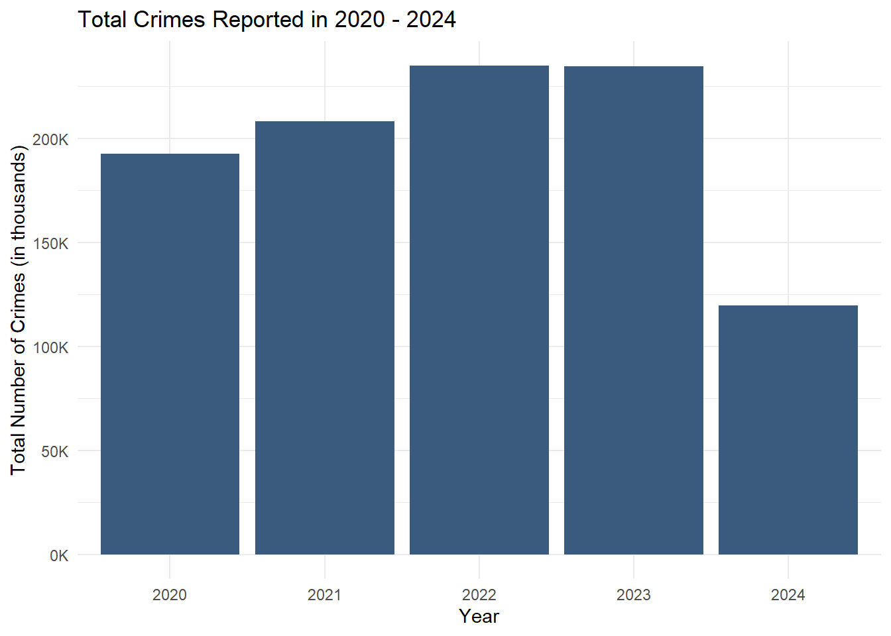
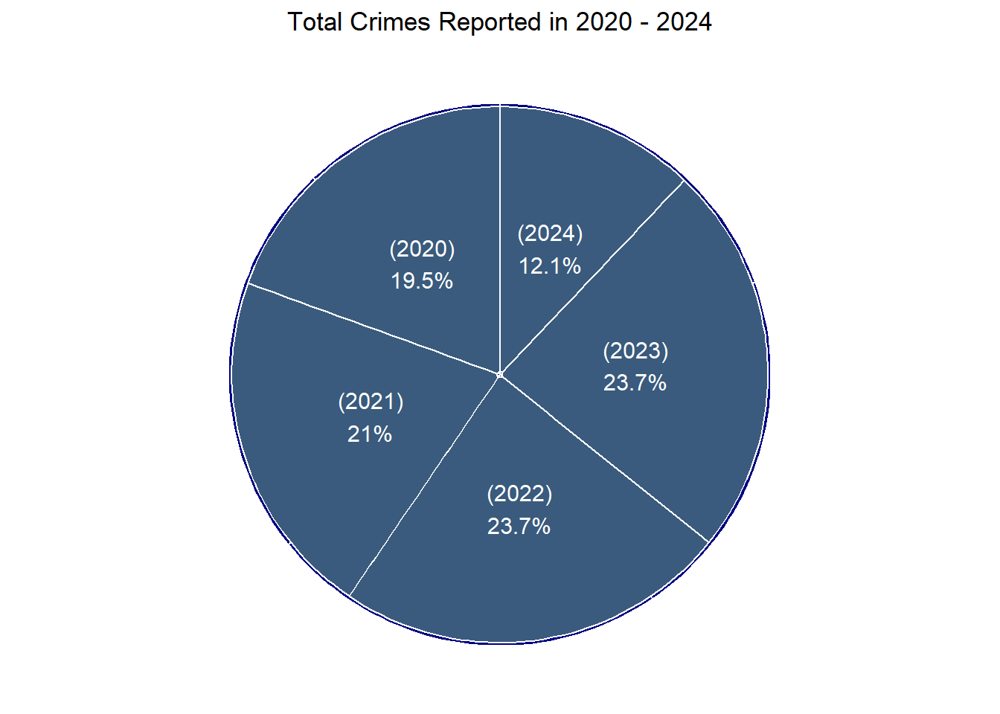
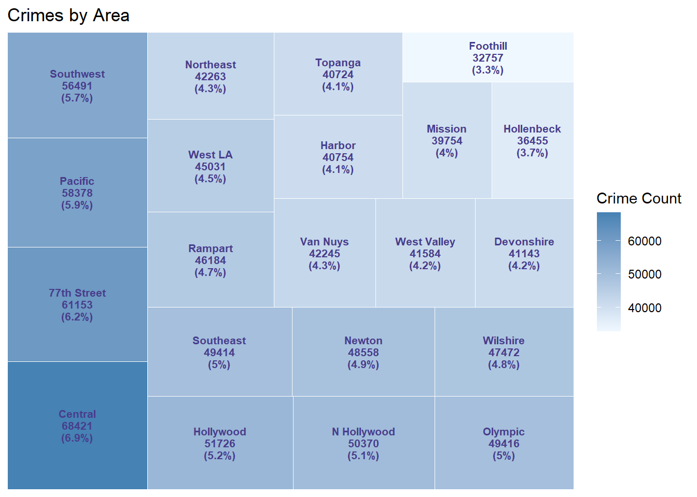
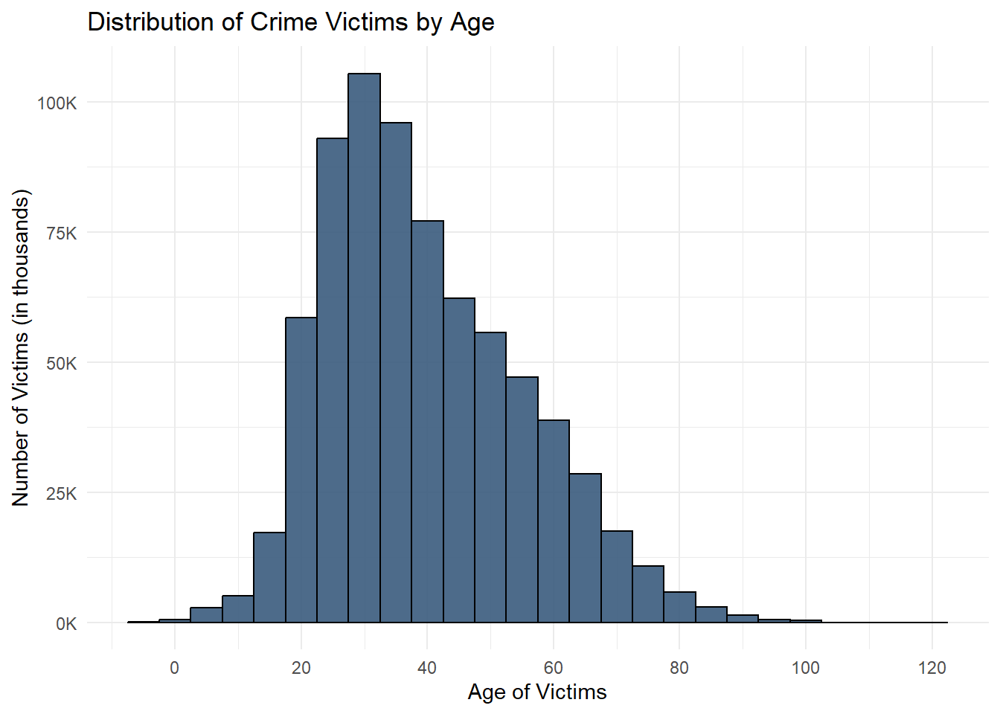
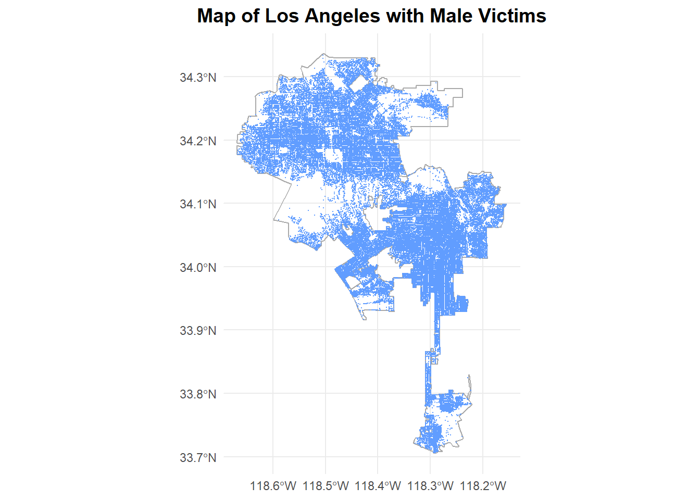
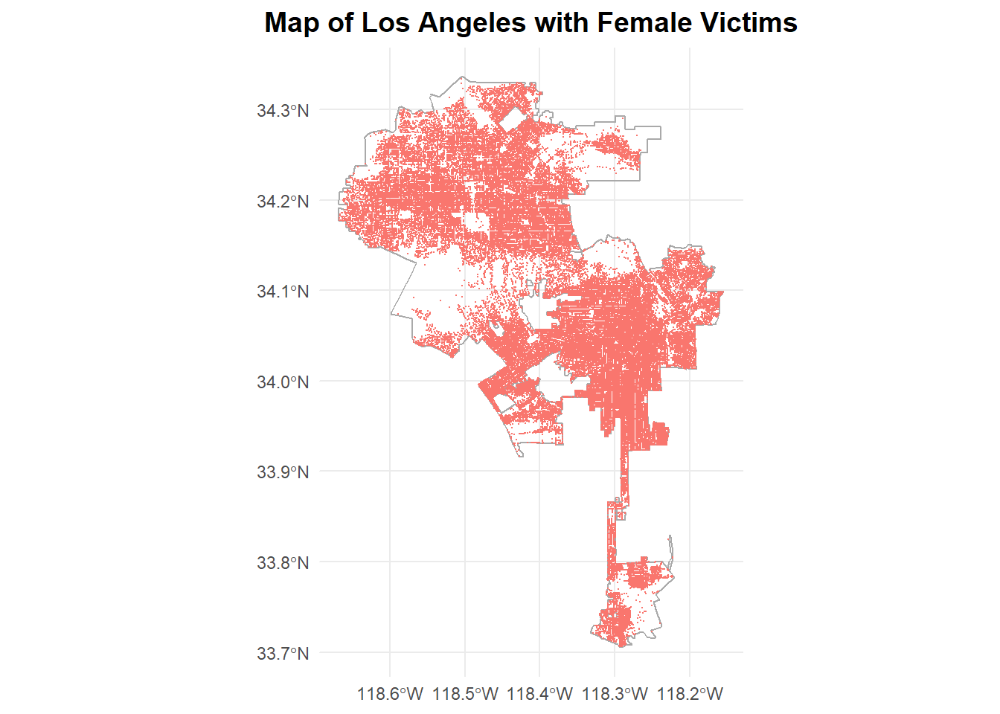
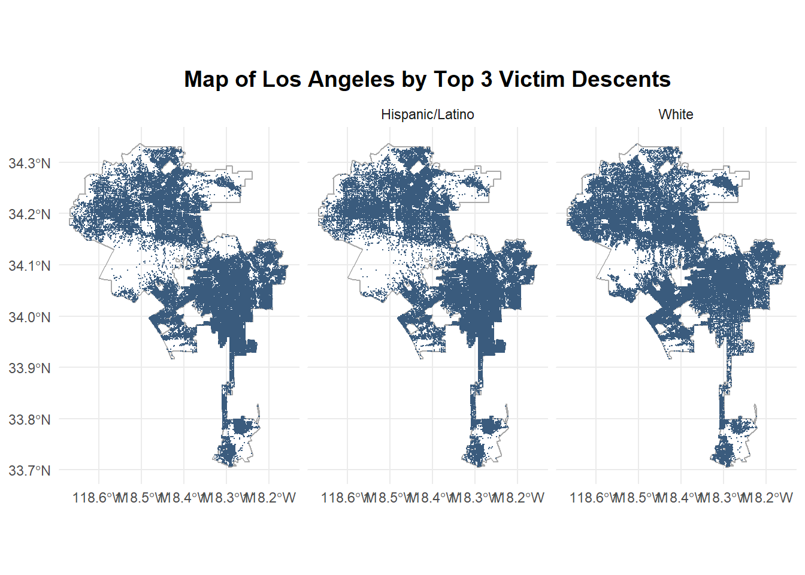

Public Safety Awareness Campaign Based on Crime Data
Overview
This project aims to develop a comprehensive public safety awareness campaign that utilizes detailed crime data from Los Angeles, spanning from 2020 to the present. The focus is on enhancing community well-being by educating residents about prevalent crime types, identifying high-risk areas, and promoting proactive safety measures.
Objective
To analyze crime data to inform a public safety campaign that:
Educates the Los Angeles community about common crime trends.
Identifies and addresses high-risk areas effectively.
Encourages the adoption of proactive safety measures.
Project Description
This initiative will leverage crime data provided by the LAPD to dissect crime patterns and distributions geographically and temporally. The resulting insights will guide the creation of targeted awareness content, aiming to equip residents with the knowledge and tools to enhance their safety and foster a cooperative relationship between the LAPD and the community.
Data Source
Source: LAPD Crime Dataset from the Los Angeles Open Data Portal.
Coverage: 2020 to present, with bi-weekly updates following a recent system transition to NIBRS compliance in March 2024.
Content: The dataset comprises approximately 984,000 records, each representing a crime incident detailed across 28 fields including incident specifics, victim demographics, location data, and case status.
Data Analysis Strategy
Initial Data Handling:
Load and merge data from multiple CSV files.
Perform cleaning and preprocessing to ensure data integrity and usability.
Exploratory Analysis:
Identify the most frequent crime types and affected neighborhoods.
Analyze demographic factors influencing crime rates to tailor the campaign messaging.
Detailed Analysis:
Investigate temporal patterns to understand crime trends over the years.
Spatial analysis to pinpoint high-risk locations and peak times for crimes.
Installing package into 'C:/Users/anubh/AppData/Local/R/win-library/4.4'
(as 'lib' is unspecified)
package 'sf' successfully unpacked and MD5 sums checked
The downloaded binary packages are in
C:\Users\anubh\AppData\Local\Temp\RtmpayuWDr\downloaded_packages
#Code and Visualization for the total cases reported:#Load necessary librarieslibrary(ggplot2)
Warning: package 'ggplot2' was built under R version 4.4.2
library(RColorBrewer)library(dplyr)
Warning: package 'dplyr' was built under R version 4.4.2
Attaching package: 'dplyr'
The following objects are masked from 'package:stats':
filter, lag
The following objects are masked from 'package:base':
intersect, setdiff, setequal, union
library(scales)# Load the data# Read the datasetcsv_files <-list.files(path ="data/", pattern ="*.csv", full.names =TRUE)crime_data <-do.call(rbind, lapply(csv_files, read.csv))# Summarize the total number of crimes for the year 2020crime_summary <- crime_data %>%group_by(Year) %>%summarize(Total_Crimes =n())# Calculate percentages for the pie chartcrime_summary <- crime_summary %>%mutate(Percentage = Total_Crimes /sum(Total_Crimes) *100)# Define a single-color palette (blue)color_palette <-c("#3A5B7D") # Replace with your preferred shade of blue# Bar Graph: Total Crimes Reported in 2020ggplot(crime_summary, aes(x =factor(Year), y = Total_Crimes, fill =factor(Year ))) +geom_bar(stat ="identity") +scale_y_continuous(labels =label_number(scale =0.001, suffix ="K")) +# Adjust y-axis labelsscale_fill_manual(values =rep(color_palette, length(unique(crime_summary$Year)))) +labs(title ="Total Crimes Reported in 2020 - 2024",x ="Year",y ="Total Number of Crimes (in thousands)" ) +theme_minimal() +theme(legend.position ="none") # Hide legend

# Define a custom color palette with lighter and darker shades for depthcolor_palette <-c("#000080", "#3A5B7D") # Blue and dark blue for shading effect# Pie Chart: Total Crimes Reported in 2020 with Depthggplot(crime_summary, aes(x ="", y = Total_Crimes, fill =factor(Year))) +geom_bar(stat ="identity", width =1.2, color ="white", show.legend =FALSE, fill = color_palette[1]) +# Outer layergeom_bar(stat ="identity", width =1.17, color ="white", aes(fill =factor(Year))) +# Inner layer for "depth"coord_polar("y") +geom_text(aes(label =paste0("(", Year, ")", "\n", round(Percentage, 1), "%")), position =position_stack(vjust =0.5), color ="white", size =4) +scale_fill_manual(values =rep(color_palette[2], length(unique(crime_summary$Year)))) +labs(title ="Total Crimes Reported in 2020 - 2024" ) +theme_void() +theme(plot.title =element_text(hjust =0.5),legend.position ="none"# Hide legend )

Key Research Questions
What are the primary types of crimes occurring in Los Angeles and their distribution across the city?
Understanding the primary types of crimes and their geographic distribution is critical to improving public safety and allocating resources effectively. By analyzing crime data, this research will identify prevalent crime categories (such as violent crimes, property crimes, and drug-related offenses) and the specific neighborhoods or regions most affected by these crimes. This insight helps to pinpoint where targeted interventions and public awareness campaigns are most needed.
Approach:
Data Categorization
Classify crimes into high-level categories (e.g., assault, theft, burglary, drug offenses, vandalism).
Use data fields such as crime type, crime code, and description for consistent classification.
Geospatial Analysis:
Map the distribution of crimes using GIS (Geographic Information Systems) tools to visualize crime hotspots.
Use heatmaps and kernel density estimation to highlight areas with high concentrations of crime.
Temporal Analysis:
Analyze trends over time (monthly, quarterly, yearly) to observe patterns in crime rates.
Identify seasonal variations (e.g., spikes during holidays or specific events).
Statistical Methods:
Apply clustering techniques like K-Means or DBSCAN to group locations based on crime frequency and type.
Use regression analysis to identify factors contributing to crime rates in specific areas.
Visualization:
Develop interactive maps and dashboards showing crime types, hotspots, and temporal trends.
Create infographics that can be shared via social media and community meetings.
Insights for the Campaign:
Identify which neighborhoods require increased police presence or community engagement.
Create location-specific materials (e.g., safety flyers for high-theft areas) and share information about peak crime hours.
install.packages("remotes")
Installing package into 'C:/Users/anubh/AppData/Local/R/win-library/4.4'
(as 'lib' is unspecified)
package 'remotes' successfully unpacked and MD5 sums checked
The downloaded binary packages are in
C:\Users\anubh\AppData\Local\Temp\RtmpayuWDr\downloaded_packages
remotes::install_github('r-tmap/tmap')
Using GitHub PAT from the git credential store.
Skipping install of 'tmap' from a github remote, the SHA1 (1b3dca91) has not changed since last install.
Use `force = TRUE` to force installation
install.packages("tigris", dependencies =TRUE)
Installing package into 'C:/Users/anubh/AppData/Local/R/win-library/4.4'
(as 'lib' is unspecified)
package 'tigris' successfully unpacked and MD5 sums checked
The downloaded binary packages are in
C:\Users\anubh\AppData\Local\Temp\RtmpayuWDr\downloaded_packages
install.packages("sf")
Installing package into 'C:/Users/anubh/AppData/Local/R/win-library/4.4'
(as 'lib' is unspecified)
package 'sf' successfully unpacked and MD5 sums checked
The downloaded binary packages are in
C:\Users\anubh\AppData\Local\Temp\RtmpayuWDr\downloaded_packages
install.packages("jsonify")
Installing package into 'C:/Users/anubh/AppData/Local/R/win-library/4.4'
(as 'lib' is unspecified)
package 'jsonify' successfully unpacked and MD5 sums checked
The downloaded binary packages are in
C:\Users\anubh\AppData\Local\Temp\RtmpayuWDr\downloaded_packages
```{r}# The code and visualization for the Area with top 5 Crimes:#install.packages("remotes")#remotes::install_github('r-tmap/tmap')#install.packages("sf")#install.packages("tigris", dependencies = TRUE)#install.packages("jsonify", dependencies = TRUE)# Load necessary librarieslibrary(sf)library(tigris)library(ggplot2)library(dplyr)library(stringr) # For string manipulationlibrary(readr) # For reading CSV fileslibrary(tmap)# Set options for tigrisoptions(tigris_class = "sf", tigris_use_cache = TRUE)# Step 1: Fetch Los Angeles city shapefilela_shapefile <- places(state = "CA", cb = TRUE) %>% filter(NAME == "Los Angeles")# Step 2: Read and combine all CSV files into one data framecsv_files <- list.files(path = "data/", pattern = "*.csv", full.names = TRUE)csv_data <- do.call(rbind, lapply(csv_files, read.csv))# Step 3: Replace specific value in "Crm Cd Desc"csv_data <- csv_data %>% mutate(Crm.Cd.Desc = str_replace(Crm.Cd.Desc, "VANDALISM - FELONY \\(\\$400 & OVER, ALL CHURCH VANDALISMS\\)", "VANDALISM - FELONY" ))# Step 4: Filter out rows where LON and LAT are 0filtered_data <- csv_data %>% filter(LON != 0, LAT != 0)# Step 5: Identify top 5 crimes in "Crm Cd Desc"top_crimes <- filtered_data %>% count(Crm.Cd.Desc, sort = TRUE) %>% top_n(5, n) %>% pull(Crm.Cd.Desc)# Step 6: Filter data for only the top 5 crimesfiltered_top_crimes <- filtered_data %>% filter(Crm.Cd.Desc %in% top_crimes)# Step 7: Convert filtered data to an sf objectpoints_sf <- st_as_sf(filtered_top_crimes, coords = c("LON", "LAT"), crs = 4326)# Step 8: Transform coordinate system to match Los Angeles shapefilepoints_sf <- st_transform(points_sf, st_crs(la_shapefile))# Step 9: Plot the map with points categorized by crime and legend adjustmentsggplot() + geom_sf(data = la_shapefile, fill = "lightblue", color = "darkblue", linewidth = 0.5) + geom_sf(data = points_sf, aes(color = Crm.Cd.Desc), size = 0.1, alpha = 1) + scale_color_viridis_d(name = "Crime Type") + ggtitle("Map of Los Angeles with Top 5 Crimes") + theme_minimal() + theme(legend.position = "bottom", # Move legend to the bottomlegend.title = element_text(size = 10), # Customize legend title sizelegend.text = element_text(size = 9), # Customize legend text sizelegend.box = "vertical" # Arrange legend )tmap_mode("view")tm_shape(la_shapefile) + tm_fill(fill = "lightblue", # Fill color for the shapefilecol = "darkblue", # Border color for the shapefilelwd = 0.5 # Border line width ) + tm_shape(points_sf) + tm_dots(fill = "Crm.Cd.Desc", # Variable for fill colorfill.scale = tm_scale(values = "viridis"), # Use tm_scale for palettesize = 0.001, # Dot sizefill_alpha = 1, # Transparencytitle = "Crime Type" # Legend title ) + tm_title("Map of Los Angeles with Top 5 Crimes") + # Title tm_layout(legend.outside = FALSE, # Keep legend inside the maplegend.position = c("right", "top"), # Correct legend positionlegend.text.size = 0.9, # Legend text sizelegend.title.size = 1.0, # Legend title sizelegend.bg.color = "white", # Legend background colorlegend.bg.alpha = 0.8 # Legend background transparency )```
#Code and Visualization for the areas in a TreeMap to define the count, #percentage and color density of Crime:remove.packages("ggfittext")
Removing package from 'C:/Users/anubh/AppData/Local/R/win-library/4.4'
(as 'lib' is unspecified)
remove.packages("treemapify")
Removing package from 'C:/Users/anubh/AppData/Local/R/win-library/4.4'
(as 'lib' is unspecified)
install.packages("ggfittext")
Installing package into 'C:/Users/anubh/AppData/Local/R/win-library/4.4'
(as 'lib' is unspecified)
package 'ggfittext' successfully unpacked and MD5 sums checked
The downloaded binary packages are in
C:\Users\anubh\AppData\Local\Temp\RtmpayuWDr\downloaded_packages
install.packages("treemapify")
Installing package into 'C:/Users/anubh/AppData/Local/R/win-library/4.4'
(as 'lib' is unspecified)
package 'treemapify' successfully unpacked and MD5 sums checked
The downloaded binary packages are in
C:\Users\anubh\AppData\Local\Temp\RtmpayuWDr\downloaded_packages
Warning: package 'treemapify' was built under R version 4.4.2
# Read the datasetcsv_files <-list.files(path ="data/", pattern ="*.csv", full.names =TRUE)crime_data <-do.call(rbind, lapply(csv_files, read.csv))# Summarize crimes by area and sort in descending orderarea_summary <- crime_data %>%group_by(AREA.NAME) %>%summarize(Crime_Count =n(), .groups ="drop") %>%mutate(Percentage = Crime_Count /sum(Crime_Count) *100) %>%arrange(desc(Crime_Count))# Create a treemap with sorted data and conditional text colorggplot(area_summary, aes(area = Crime_Count,fill = Crime_Count,label =paste0(AREA.NAME, "\n", Crime_Count, "\n", "(", round(Percentage, 1), "%)"))) +geom_treemap(color ="white") +# Set line color to whitegeom_treemap_text(aes(colour ="darkslateblue"),fontface ="bold",place ="centre",grow =FALSE, # Disable font resizingsize =8# Set a consistent font size ) +scale_colour_identity() +# Use text color as specified in the datascale_fill_gradient(low ="aliceblue", high ="steelblue") +labs(title ="Crimes by Area",fill ="Crime Count" ) +theme_minimal()

#Code and Visualization of top 5 Crimes:# Load necessary librarieslibrary(sf)
Warning: package 'sf' was built under R version 4.4.2
Linking to GEOS 3.12.2, GDAL 3.9.3, PROJ 9.4.1; sf_use_s2() is TRUE
library(tigris)
Warning: package 'tigris' was built under R version 4.4.2
To enable caching of data, set `options(tigris_use_cache = TRUE)`
in your R script or .Rprofile.
library(ggplot2)library(dplyr)library(stringr) # For string manipulationlibrary(readr) # For reading CSV files
Attaching package: 'readr'
The following object is masked from 'package:scales':
col_factor
library(plotly) # For interactive plots
Attaching package: 'plotly'
The following object is masked from 'package:ggplot2':
last_plot
The following object is masked from 'package:stats':
filter
The following object is masked from 'package:graphics':
layout
library(scales) # For number formatting# Set options for tigrisoptions(tigris_class ="sf", tigris_use_cache =TRUE)# Step 1: Read and combine all CSV files into one data framecsv_files <-list.files(path ="data/", pattern ="*.csv", full.names =TRUE)csv_data <-do.call(rbind, lapply(csv_files, read.csv))# Step 2: Replace specific value in "Crm Cd Desc"csv_data <- csv_data %>%mutate(Crm.Cd.Desc =str_replace( Crm.Cd.Desc, "VANDALISM - FELONY \\(\\$400 & OVER, ALL CHURCH VANDALISMS\\)", "VANDALISM - FELONY" ))# Step 3: Filter out rows where LON and LAT are 0filtered_data <- csv_data %>%filter(LON !=0, LAT !=0)# Step 4: Identify top 5 crimes in "Crm Cd Desc"top_crimes <- filtered_data %>%count(Crm.Cd.Desc, sort =TRUE) %>%top_n(5, n) %>%mutate(Percentage = n /sum(n) *100) # Calculate percentage of each crime# Step 5: Create an interactive bar plot for the top 5 crimes# Modify theme to increase the font size of x-axis labelsplot <-ggplot(top_crimes, aes(x =reorder(Crm.Cd.Desc, n), y = n, text =paste("Crime Type:", Crm.Cd.Desc, "<br>Incidents:", n, "<br>Percentage:", sprintf("%.1f%%", Percentage)))) +geom_bar(stat ="identity", fill ="#3A5B7D", color ="black", width =0.4) +geom_text(aes(label =paste0(" ----------- (", sprintf("%.1f%%", Percentage), ")")), hjust =10, size =4, color ="black",fontface ="bold") +coord_flip() +# Flip coordinates to make horizontal barsscale_y_continuous(labels =label_number(scale_cut =cut_short_scale()), expand =expansion(mult =c(0.05, 0.1))) +# Format numbers and adjust paddinglabs(title ="Top 5 Crimes in Los Angeles",x ="Crime Type",y ="Number of Incidents" ) +theme_minimal() +theme(legend.position ="none", # Hide legend for this plotplot.title =element_text(size =14, face ="bold"),axis.title =element_text(size =12),#axis.text.y = element_text(margin = margin(t = 0, r = 5, b = 0, l = 5)), # Adjust spacing between text and barsaxis.text.y =element_text(size =19), # Increase font size of y-axis labelsaxis.text.x =element_text(size =14), # Increase font size of x-axis labelsplot.title.position ="plot" )# Convert ggplot to an interactive plotly plotinteractive_plot <-ggplotly(plot, tooltip ="text")# Print the interactive plotinteractive_plot
How do victim demographics vary across different crime types?
Analyzing how different demographics (age, sex, and descent) are affected by various crime types can provide valuable insights for tailoring public safety campaigns. This research aims to identify patterns of victimization, such as whether specific age groups or genders are more susceptible to certain crimes. These insights will enable the development of targeted safety messages and community interventions to protect vulnerable populations.
Approach:
Data Segmentation:
Segment crime data by victim demographics using fields such as age, sex, and descent.
Group demographics into meaningful categories (e.g., age ranges: 0-17, 18-34, 35-54, 55+).
Crime Type Association:
Analyze the relationship between demographic segments and crime types.
Identify which demographics are more frequently victimized in specific crimes (e.g., young adults in assault cases, elderly individuals in fraud cases).
Statistical Analysis:
Perform cross-tabulation and correlation analysis to identify significant patterns.
Use hypothesis testing (e.g., chi-square tests) to validate observed trends.
Apply machine learning techniques (e.g., decision trees or logistic regression) to predict demographics most at risk for certain crimes.
Visualization:
Create demographic distribution charts (e.g., bar graphs, pie charts) highlighting patterns of victimization.
Develop heatmaps showing where specific demographic groups are most affected
Predictive Insights:
Generate profiles of vulnerable demographics for each crime type to inform safety strategies.
Identify whether certain ethnic or gender groups are disproportionately affected by particular crimes.
Insights for the Campaign:
Customize safety messages for different demographics (e.g., social media campaigns for young adults, printed flyers for senior citizens).
Develop culturally relevant materials and outreach programs to address the needs of specific communities.
#Code and Visualization of Victim Age Distribution:# Load necessary librarieslibrary(sf)library(tigris)library(ggplot2)library(dplyr)library(stringr) # For string manipulationlibrary(readr) # For reading CSV files# Step 1: Read and combine all CSV files into one data framecsv_files <-list.files(path ="data/", pattern ="*.csv", full.names =TRUE)crime_data <-do.call(rbind, lapply(csv_files, read.csv))cleaned_data <-subset(crime_data, !is.na(Vict.Age) & Vict.Age !=0)# Define bin size (e.g., 5 years per bin)bin_size <-5# Create a histogram for victim age distributionggplot(cleaned_data, aes(x = Vict.Age)) +geom_histogram(binwidth = bin_size, fill ="#3A5B7D", alpha =0.9, color ="black") +scale_x_continuous(breaks =seq(0, max(cleaned_data$Vict.Age, na.rm =TRUE), by =20),name ="Age of Victims" ) +scale_y_continuous(labels =function(x) paste0(x /1000, "K"),name ="Number of Victims (in thousands)" ) +labs(title ="Distribution of Crime Victims by Age" ) +theme_minimal()

#Code and Visualization of Victim Sex (Male & Female) Distribution in Map of Los Angeles:# Load necessary librarieslibrary(sf)library(tigris)library(ggplot2)library(dplyr)library(stringr) # For string manipulationlibrary(readr) # For reading CSV fileslibrary(tmap)
Attaching package: 'tmap'
The following object is masked from 'package:datasets':
rivers
# Set options for tigrisoptions(tigris_class ="sf", tigris_use_cache =TRUE)# Step 1: Fetch Los Angeles city shapefilela_shapefile <-places(state ="CA", cb =TRUE) %>%filter(NAME =="Los Angeles")
Retrieving data for the year 2022
# Step 2: Read and combine all CSV files into one data framecsv_files <-list.files(path ="data/", pattern ="*.csv", full.names =TRUE)csv_data <-do.call(rbind, lapply(csv_files, read.csv))# Step 3: Replace specific value in "Crm Cd Desc"csv_data <- csv_data %>%mutate(Crm.Cd.Desc =str_replace( Crm.Cd.Desc, "VANDALISM - FELONY \\(\\$400 & OVER, ALL CHURCH VANDALISMS\\)", "VANDALISM - FELONY" ))# Step 4: Filter out rows where LON and LAT are 0filtered_data <- csv_data %>%filter(LON !=0, LAT !=0, Vict.Sex =='M')# Step 5: Identify top 5 crimes in "Crm Cd Desc"top_crimes <- filtered_data %>%count(Vict.Sex, sort =TRUE) %>%pull(Vict.Sex)# Step 6: Filter data for only the top 5 crimesfiltered_top_crimes <- filtered_data %>%filter(Vict.Sex %in% top_crimes)# Step 7: Convert filtered data to an sf objectpoints_sf <-st_as_sf(filtered_top_crimes, coords =c("LON", "LAT"), crs =4326)# Step 8: Transform coordinate system to match Los Angeles shapefilepoints_sf <-st_transform(points_sf, st_crs(la_shapefile))# Step 9: Plot the map with points in redggplot() +geom_sf(data = la_shapefile, fill =NA, color ="darkgrey", linewidth =0.5) +geom_sf(data = points_sf, color ="#F9766E", size =0.1, alpha =1) +##F9766E 619DFFggtitle("Map of Los Angeles with Female Victims") +theme_minimal() +theme(legend.position ="none", # Remove legend for uniform colorplot.title =element_text(size =14, face ="bold", hjust =0.5) # Centered title )
# Step 9: Plot the map with points in redggplot() +geom_sf(data = la_shapefile, fill =NA, color ="darkgrey", linewidth =0.5) +geom_sf(data = points_sf, color ="#619DFF", size =0.1, alpha =1) +##F9766E 619DFFggtitle("Map of Los Angeles with Male Victims") +theme_minimal() +theme(legend.position ="none", # Remove legend for uniform colorplot.title =element_text(size =14, face ="bold", hjust =0.5) # Centered title )

#Code and Visualization of Victim Race Distribution:# Load necessary librarylibrary(dplyr)# Read the datasetcsv_files <-list.files(path ="data/", pattern ="*.csv", full.names =TRUE)crime_data <-do.call(rbind, lapply(csv_files, read.csv))# Define a mapping for race abbreviationsrace_mapping <-c("B"="Black","W"="White","H"="Hispanic","A"="Asian","O"="Other","X"="Unknown")# Filter for the specified race categoriesvalid_races <-names(race_mapping)crime_data <- crime_data %>%filter(Vict.Descent %in% valid_races) %>%mutate(Vict_Descent =recode(Vict.Descent, !!!race_mapping))# Summarize crime counts by racecrime_summary <- crime_data %>%group_by(Vict_Descent) %>%summarize(Crime_Count =n(), .groups ='drop') %>%arrange(desc(Crime_Count))# Create a horizontal bar graphggplot(crime_summary, aes(x = Crime_Count, y =reorder(Vict_Descent, Crime_Count))) +geom_bar(stat ="identity", fill ="#3A5B7D") +scale_x_continuous(labels = scales::label_number(scale =0.001, suffix ="K")) +labs(title ="Crime Counts by Race",x ="Number of Crimes (in thousands)",y ="Race" ) +theme_minimal() +theme(axis.text.x =element_text(size =15), # Increase font size for x-axis labelsaxis.title.x =element_text(size =14), # Increase font size for x-axis titleaxis.title.y =element_text(size =14), # Increase font size for y-axis titleplot.title =element_text(size =16, hjust =0.5), # Center-align and enlarge titleaxis.text.y =element_text(size =19) )

# Load necessary libraries# Load necessary librarieslibrary(sf)library(tigris)library(ggplot2)library(dplyr)library(stringr) # For string manipulationlibrary(readr) # For reading CSV fileslibrary(tmap)# Set options for tigrisoptions(tigris_class ="sf", tigris_use_cache =TRUE)# Step 1: Fetch Los Angeles city shapefilela_shapefile <-places(state ="CA", cb =TRUE) %>%filter(NAME =="Los Angeles")
Retrieving data for the year 2022
# Step 2: Read and combine all CSV files into one data framecsv_files <-list.files(path ="data/", pattern ="*.csv", full.names =TRUE)csv_data <-do.call(rbind, lapply(csv_files, read.csv))# Step 3: Filter out rows where LON and LAT are 0 and Vict Descent values are not blank or "-"filtered_data <- csv_data %>%filter(LON !=0, LAT !=0, !is.na(Vict.Descent), Vict.Descent !="-")# Step 4: Identify top 3 victim descentstop_descents <- filtered_data %>%count(Vict.Descent, sort =TRUE) %>%top_n(3, n) %>%pull(Vict.Descent)# Step 5: Filter data for only the top 3 descents# Rename Vict Descent values for clarityfiltered_data <- filtered_data %>%mutate(Vict.Descent =case_when( Vict.Descent =="H"~"Hispanic/Latino", Vict.Descent =="W"~"White", Vict.Descent =="B"~"Black/African American",TRUE~ Vict.Descent ))top_descents <- filtered_data %>%count(Vict.Descent, sort =TRUE) %>%top_n(3, n) %>%pull(Vict.Descent)# Step 6: Filter data for only the top 3 descentsfiltered_top_descents <- filtered_data %>%filter(Vict.Descent %in% top_descents)# Step 7: Convert filtered data to an sf objectpoints_sf <-st_as_sf(filtered_top_descents, coords =c("LON", "LAT"), crs =4326)# Step 8: Transform coordinate system to match Los Angeles shapefilepoints_sf <-st_transform(points_sf, st_crs(la_shapefile))# Step 9: Plot the map with all points in one color and full descent namesggplot() +geom_sf(data = la_shapefile, fill =NA, color ="darkgrey", linewidth =0.5) +geom_sf(data = points_sf, color ="#3A5B7D", size =0.1, alpha =1) +facet_wrap(~ Vict.Descent, ncol =3) +ggtitle("Map of Los Angeles by Top 3 Victim Descents") +theme_minimal() +theme(legend.position ="none", # Remove legend for uniform colorplot.title =element_text(size =14, face ="bold", hjust =0.5) # Centered title )

Campaign Development
Materials Creation: Design and distribute informative materials such as flyers, social media graphics, and posters, highlighting crime prevention strategies tailored to specific demographics and high-risk areas.
Community Collaboration: Engage with local leaders and organizations to amplify reach and impact, ensuring materials and messages are culturally and contextually relevant.
Workshops: Conduct safety workshops both in-person and virtually to directly engage with the community, offering practical safety tips and fostering discussions on public safety improvements.
Engagement Strategies
Social Media Engagement: Create dedicated channels for real-time safety updates, leveraging interactive content like polls and educational quizzes to engage a broader audience.
Feedback Mechanisms: Implement online forms and utilize QR codes on campaign materials to gather community feedback and suggestions actively.
Feedback and Continuous Improvement
Iterative Refinement: Regularly update campaign strategies based on community feedback and new crime data insights.
Impact Reporting: Periodically report on campaign effectiveness, utilizing feedback and crime statistics to measure impact and guide future initiatives.
Expected Outcomes
Increased Awareness: Raise awareness about common crimes, enhancing community knowledge and preparedness.
Crime Reduction: Drive down the rates of frequent crimes in targeted high-risk areas.
Strengthened Community Relations: Foster improved trust and collaboration between the LAPD and the Los Angeles residents.
Actionable Community Feedback: Utilize community input to continually adapt and evolve campaign strategies, ensuring relevance and effectiveness.
This detailed proposal outlines a data-driven approach to improve public safety in Los Angeles through informed awareness and strategic community engagement. By harnessing crime data and fostering community collaboration, the campaign aims to create a safer environment for all residents.